Welcome to my project page!
Below you will find past and ongoing engineering projects. Some projects are purely my own inventions, while the rest are the result of collaboration with other engineering graduate students.
I am a recent graduate of the Masters of Science in Engineering (MSE) program at the University of Pennsylvania, concentrating in mechatronics.
I love designing, implementing and improving mechatronic hardware! I prefer working across several disciplines - integration of mechanical hardware, electronic hardware, and embedded programming creates the most challenging and worthwhile design problems.
In addition to my project and design work I am also contributing to a study investigating learning in robotic surgery. This study falls under the broader ongoing project known more generally as VerroTouch, at the Haptics Group in the GRASP Lab at the University of Pennsylvania.
January 2013 - ongoing.
Relevant Software: Eagle
Relevant Hardware: DAC ICs, Low-dropout regulators, Opamps, Crystal oscillators, Asynchronous sample rate converters, Opto-isolators
mStereo is a two-channel digital-to-analog converter (DAC) for audio. It is a small part of an eventual comprehensive hardware solution for playback of digital audio files stored on computers and mobile devices. It is currently on revision 2; details on the original mStereo are given below.
View the latest test wavforms here.
At present, mStereo is supported by two additional pieces of electronic hardware. Both are open-source designs, which I chose to use as temporary stand-ins. I will develop and implement my own designs to replace them at a later stage.
At the output, there is a balanced stereo preamplifier (above). It features 6 MHz gain bandwidth and no phase distortion in the audio band, so it makes excellent test hardware. It is suitable for headphones or connecting to a larger stereo power amplifier for use with loudspeakers. The design is a combination of four a20 modules, mounted on a backplane PCB which I designed and had fabricated (right). This provides convenient signal trace-routing and power distribution for each of the modules.
At the input there is a γ1, which uses a Burr-Brown PCM2707 to convert from a computer's USB output (PCM audio) to I2S, wich is passed to mStereo's input.
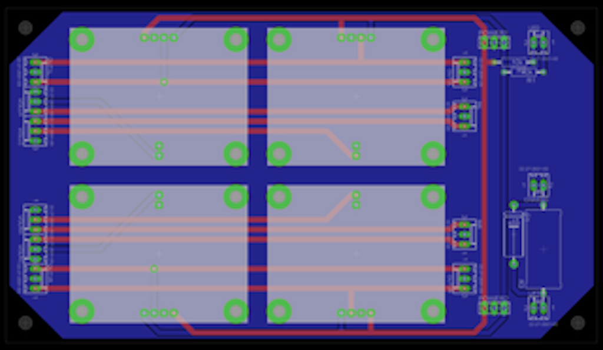
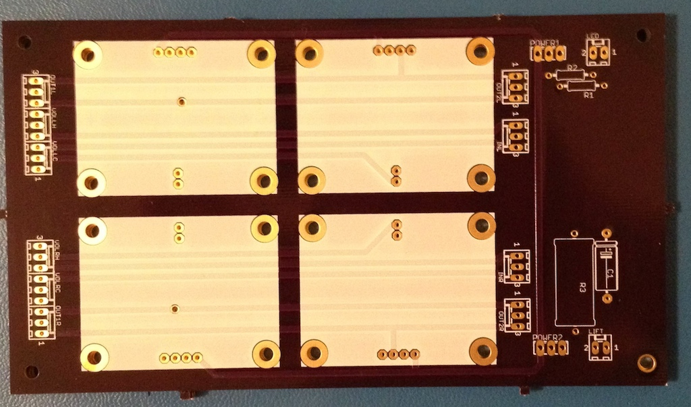
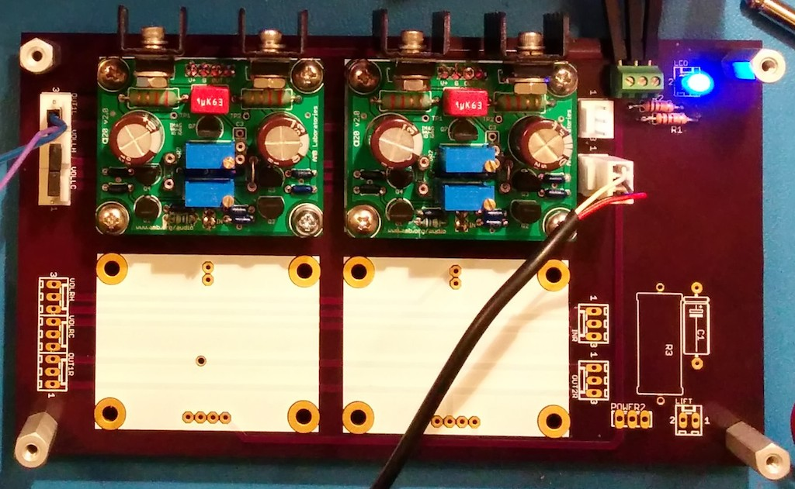
The scope of the hardware I have designed has been limited to an I2S-to-analog converter. Introduced Philips, I2S, is a standard bus for inter-IC audio communication, with many practical benefits for hardware implementation, and ultimately, for user experience.
The hardware has gone through 3 iterations. Each was fabricated (right) and tested using the rapid PCB prototyping methods outlined below. Parts were populated by hand, using solder paste, tweezers, and an oven. The fourth iteration will be fabricated and tested, and if satisfactory it will be sent out to a professional fab for production with silkscreen and solder mask.
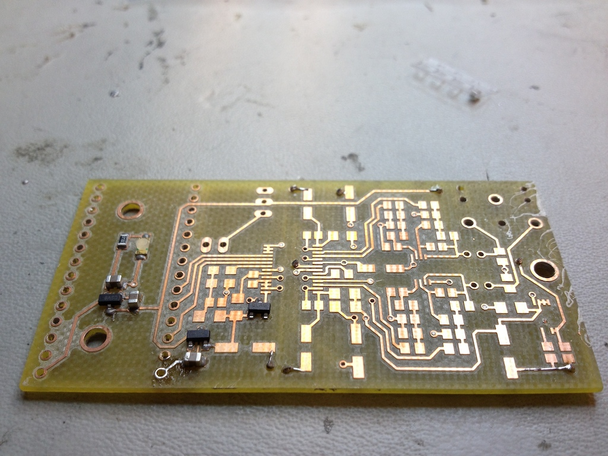
Since computer-based audio has become by far the most flexible and powerful way to store and play audio files, the task remains to develop hardware to accompany computers and provide the best possible user experience. Since I am very serious about high-fidelity reproduction of audio recordings, developing my own high-performing hardware is rewarding on many fronts.
Practically, this means seeking the best possible hardware components (DAC ICs, oscillators, power supplies, etc.), integrating them, and ensuring their implementation permits their maximum specifications to be realized.
The next addition to mStereo will be the addition of an interface for converting PCM audio to I2S, so that mStereo will no longer rely on the γ1 to perform this conversion. This will support one of two common consumer hardware connections: either USB of S/PDIF.
You can download the Rev. 1 mStereo project files here.
You can download the preamp backplane project files here.
December 2013 - With Noam Eisen
In Computational Photography (CIS 581) at the University of Pennsylvania, I developed code for fully-automatic image stitching. The objective was to take in several images and 'stitch' them together, creating a result which appears natural to the eye. At the core was the implementation of methods of automatic feature detection and automatic feature matching. I implemented some of the methods presented in this article by Brown, Szeliski and Winder.
Shown above are three sample images which were taken with overlapping features.
The images were compared against adjacent images and feature matches were identified. This is shown above, where the matching pairs of points corresponding to similar features are connected with different colored lines so they can be visualized. The features in the right image were used to estimate an affine transformation for transforming it into the frame of the left image.
After calculating the affine transformations needed to convert the center and right images into the frame of the left image, the images were overlaid. In this example, the edge regions are nearly unnoticeable, so further steps such as edge-smoothing were not necessary.
March 2013 - With Chao Qu.
Relevant Software: MATLAB, Simluink, Arduino IDE
Relevant Hardware: Arduino, DC brushed motor driver ICs
Github repository
The objective of this project was to design a classical controller to maintain a fixed following distance between two miniature lego trains. However, the controller was required to also handle a 0.1 second time-delay imposed on the system output of the following train. The lead train simply circled the track with fixed motor output, while the following train carried an ultrasonic distance sensor and an Arduino to measure distance and implement a control routine.
Initially, we set up a simple proportional derivative controller to observe the system. Without any modelling or design effort it behaved like this:
We sought a controller with good tracking performance and good disturbance rejection over a broad range of lead train speeds. This posed a particular challenge because running the lead train at different speeds strongly affects the type of disturbance that is ‘seen’ by the following train. The friction change when transitioning from the straight track to the curved track is the source of this disturbance. At high speeds, the lead train’s forward motion is high, and the step-change in track friction at this transition has little effect on its velocity. Therefore, the following train ‘sees’ little or no velocity disturbance.
However at low lead-train speeds, the friction at the transition to the corner has a prominent effect, and creates a step-like decrease in speed (and conversely, a step increase, as the lead train exits the corner shortly after). The magnitude of the step disturbance varies with the lead train speed. We wanted to make a controller that could handle these two extreme cases, plus all in-between cases.
CASE 1: fast lead train speed; insignificant velocity-step-disturbances at corner transitions.
CASE 2: slow lead train speed; significant velocity-step-disturbances at corner transitions.
The system was modelled in MATLAB Simulink, as shown in the diagram above. The following train transfer function was determined experimentally. The PID part of the controller was determined using the Zeigler-Nichols method. The feed-forward term for friction compensation was determined by trial and error.
The final controller is shown in use in the video below. Some integrator windup can still be observed, although it is limited. Disturbance rejection is greatly improved. Also, the steady state distance error amplitude is minimized, and oscillation amplitude is low.
February 2013 - June 2013 - With Ryan Wilson
Relevant Software: Eagle, CircuitCAM, BoardMaster
Relevant Hardware: LPKF S62
As an aside to some of my past electronic hardware projects, I have worked with other mechatronics students to develop increasingly fast and practical PCB prototyping methods. Fast PCB prototyping is valuable because it permits many design iterations over a short period, sometimes several in one day. Here is a link to a wiki article that I co-authored on this topic, as a reference and as an instructional resource for other mechatronics students.
The method shown involves micro-milling of copper-clad boards using an LPKF S62. This permitted milling traces and drilling, but no solder mask placement. In addition, through-hole plating was acheived separately, using solder paste, a mask, and an oven. Our system permitted traces as small as 8 mil.
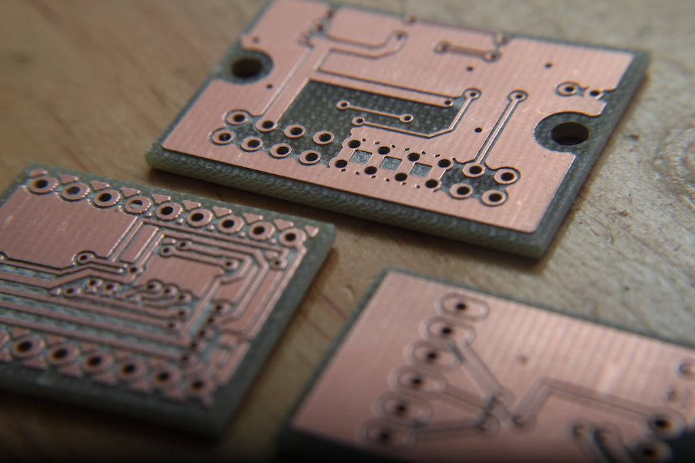
Although two-sided boards with through hole plating could be made, even faster prototyping was possible with single-sided designs, using only surface mount components. This approach permitted very short milling times - as little as 1 hour! Although a departure from two-sided prototypes may seem to be insufficient for testing some board layouts, this downside is easily justified by the reduced turnaround time, and provides the most optimal use of this prototyping method.
Languages: C
Relevant Harware: Atmega 32u4, Nordic wireless transceivers, DC brushed motor driver ICs
Our hackathon project from the PennApps Spring 2013 Hackathon featured two remote controlled mobile robots that battled each other by shooting foam darts. Both were controlled over the web, and carried a mobile phone (running Android 4.3) on top, permitting the users to stream video wirelessly and visualize their robot's persepective using the tokbok OpenTok API. Our team was awarded for the most novel use of the OpenTok API, and finished among the top 20 finalists out of approximately 400 hackers at the Spring 2013 PennApps.
Languages: C
Relevant Hardware: Atmega 32u4, DC brushed motor driver ICs, IR phototransistors, IR camera, solenoid, photoresistors
Github repository
In the final project of Mechatronic System Design (MEAM 510) groups of students built teams of three autonomous mobile robots to play hockey against one another.
Our robots were conceptualized, mechanisms were prototyped, and the final hardware was assembled in a mere 4 weeks. In addition, code for autonomous gameplay was written from the ground up, tested, and improved in parallel with the hardware development. Microcontrollers were used onboard each robot for receiving multiple sensor inputs and executing different plays.
Each robot was equipped with a small camera, harvested from inside a Nintendo Wii remote controller, and repurposed for localization. The camera was oriented toward the ceiling above the playing surface, where there was a cluster of LEDs in a fixed pattern. As the robots moved they used the detected change in position and orientation of the pattern on the ceiling to determine their own respective changes in position and orientation within the playing space. Teammate Jing is in the video above, observing the robot's ability to localize and go to a specific position.
Searching for the puck was accomplished by measuring light intensity values from a pair of phototransistors. Since the puck was constantly emitting infrared light, its relative position could be approximated by measuring the phototransistors' voltages. The phototransistors' continuous voltage values were discretized by analog-to-digital converters onboard the robot's microcontroller. The discretized quantities were compared in order to determine the puck's position in the playing space.
The electronic hardware was standardized across the robots, with every component pin-compatible and swappable. This permitted very fast repair of broken electronic hardware. The mechanical hardware, however was unique across each of the three robots. In addition, unique case-structures were used in each robot's programming, so that each robot could play a different 'role' in the miniature hockey tournament, in order to gain a strategic advantage over the competition.
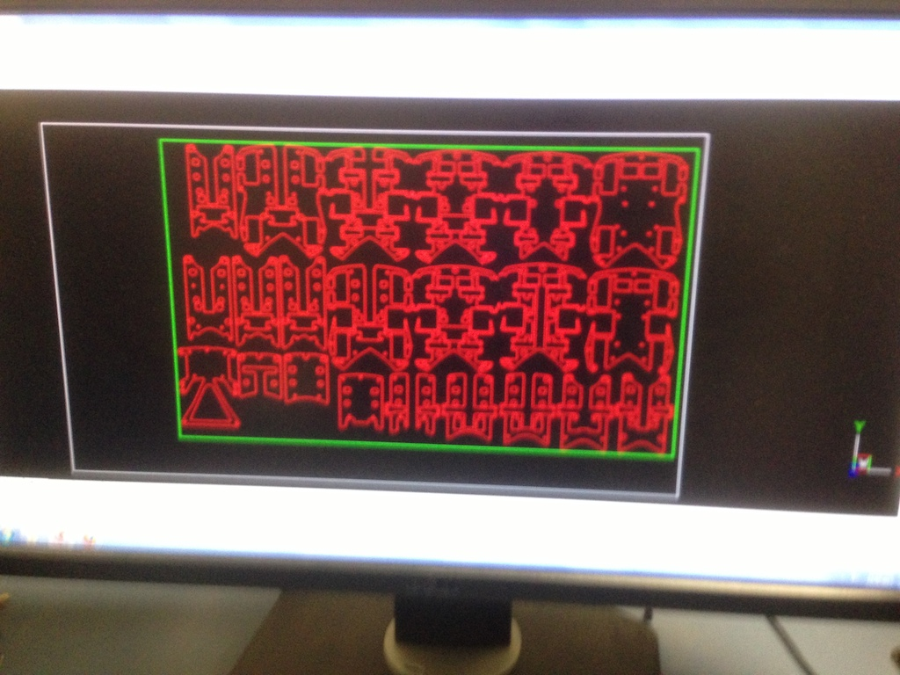
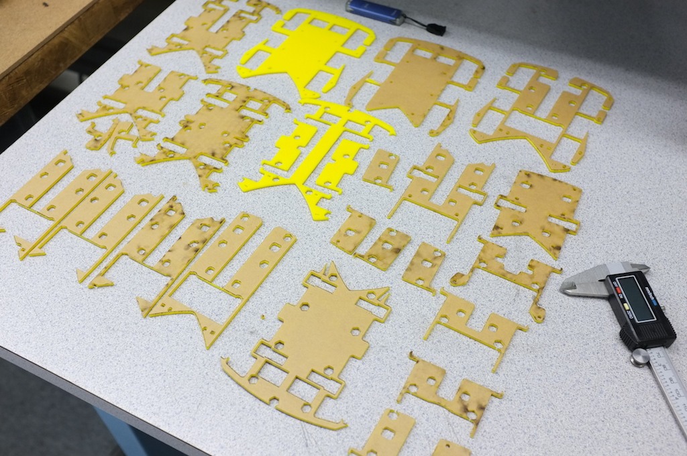
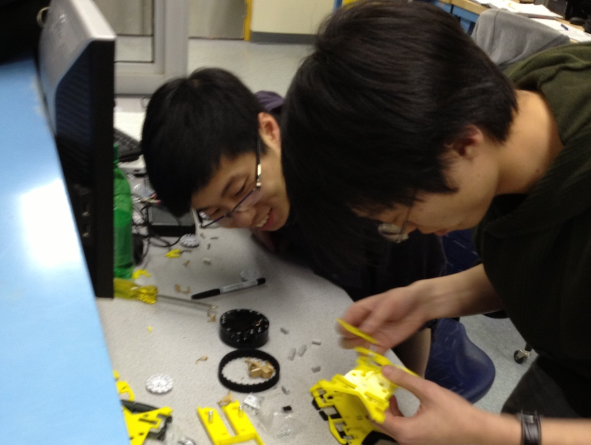
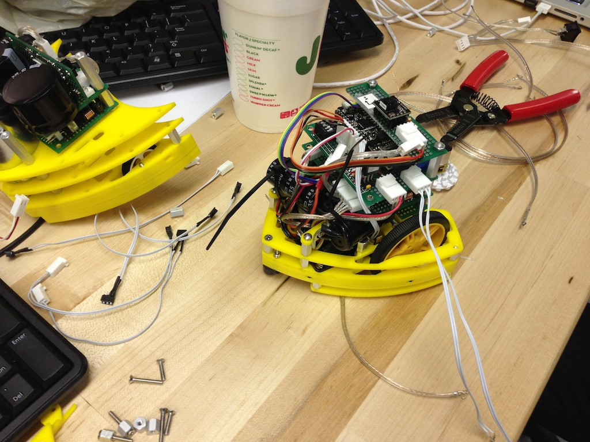
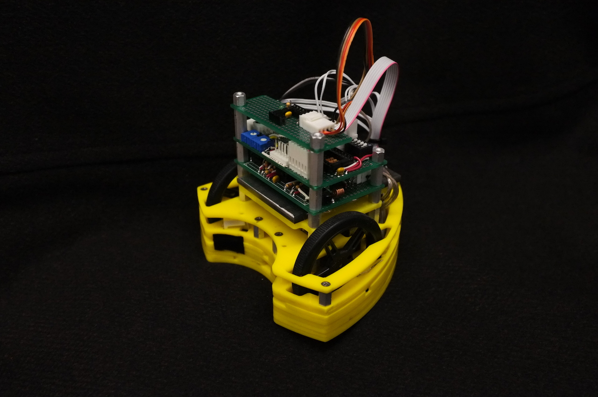
Languages: C
Relevant Hardware: Atmega 32u4, Invensense MPU6050 IMU, Quadrature encoders, DC brushed motor driver ICs
Github repository
In the fourth project of Mechatronic System Design (MEAM 510) our group built a two-wheeled balancing robot. The robot was designed to be battery powered, and able to hold both its position and orientation (vertical) on both horizontal and inclined surfaces.
The robot used a MEMS accelerometer (right) to measure its angle of tile with respect to gravity. The accelerometer module passed its output to an Atemel Atmega 32u4 microcontroller serially, using I2C. Using a feedback control routine on the microcontroller, and passing the output to two DC brushed motors, balancing was acheived. Oscillation was minimized, and in the video above it is nearly unnoticeable because of the carpet beneath the wheels.
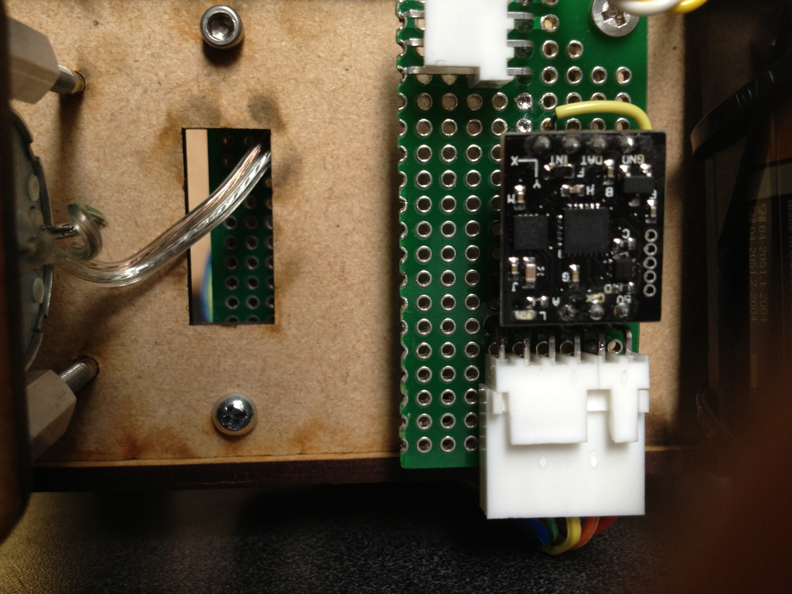
In addition, we built our own optical quadrature encoder using IR LEDs and phototransistors. It's output gave a pair of square waves, out of phase by 1/3 period. The green and blue LEDs in the video above allowed us to visualize the encoder output. The encoders allowed us to determine both the rotation speed and direction of the wheels on the balancing robot, so that our feedback control loop could bring the robot to a stationary state.
Relevant Software: MATLAB
Relevant Hardware: Unimate PUMA 260
The main project of MEAM 520 (Robotics) was to resolve some familiar image using a small 3-link industrial manipulator. The robot we used was a Unimate Puma 260. The end effector was removed and instead equipped with an RGB LED. The LED's intensity and color were varied as the end effector moved through a 2D plane in the robot's configuration space. With the room lights off, and a camera recording, the resulting light painting was saved as an image file.
Our group implemented both forward and inverse kinematic solutions to control the manipulator, using MATLAB. We downloaded an image from the internet and first discretized it into a grid of points, each with it's respective color information. By generating a set of end-effector position and orientation vectors in the base frame of the robot, we could determine the corresponding joint angles necessary for resolving the target image.
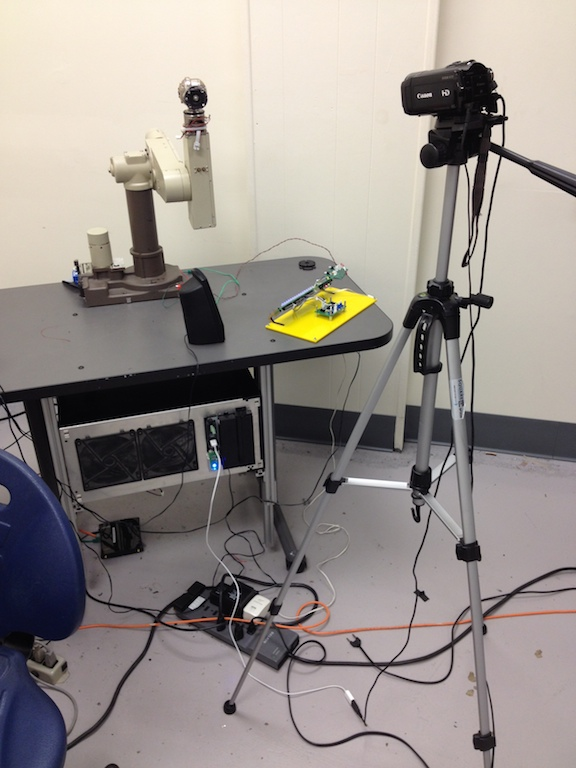
The LED orientation was maintained always orthogonal to the plane of the image. Since the camera was placed far back from the work space, and the result was cropped, a reasonably clear and recognizeable result was produced. The result is shown to the right.
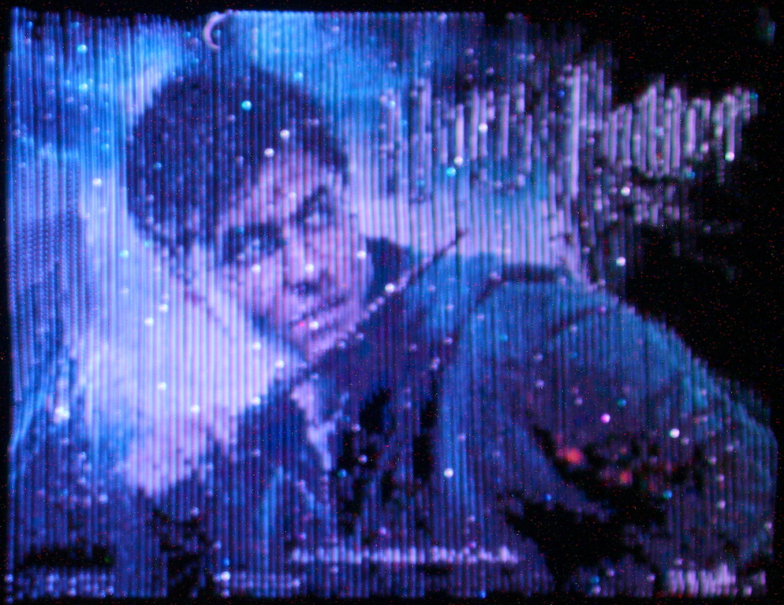